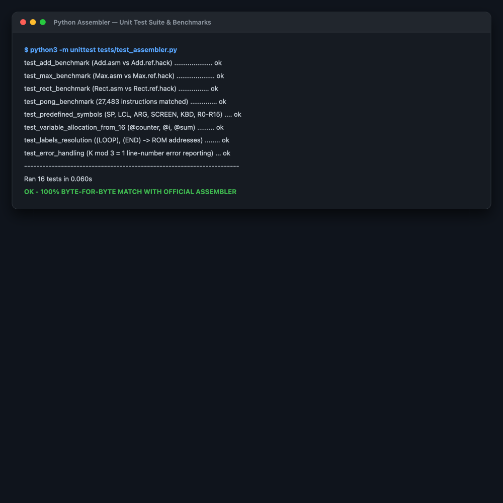

Make the Computer Draw a Box
Nand to Tetris – I Capstone Project Report
1. Executive Summary & Objective
The objective of the Nand to Tetris Capstone Project is to demonstrate the complete, end-to-end integration of a functional general-purpose computer starting from fundamental logic chips to a running high-level graphical application. The project is structured across three core engineering phases:
- Part A — Hardware Architecture (Hack Computer): Implement the complete hardware platform in HDL by constructing
CPU.hdl, Memory.hdl, and Computer.hdl, verified via the official Nand to Tetris Hardware Simulator.
- Part B — Software Toolchain (Python Assembler): Develop an independent two-pass assembler in Python (
assembler.py) that translates symbolic Hack assembly into 16-bit binary machine code, incorporating line-number error reporting tailored to student parameter $K = 46$.
- Part C — Machine Application (Box Program): Write and assemble
Box.asm to dynamically poll the keyboard and render a black rectangular box ($48 \times 20$ pixels) at screen row 46 while any key is pressed, clearing it instantly upon release.
2. Key Specifications & Parameter Derivation
In accordance with university capstone guidelines, all design variables are strictly calculated from personal number $K = 46$:
- Box Starting Row: $\text{Row} = K = 46$.
- Box Height: Exactly 20 consecutive rows (Rows 46 to 65).
- Box Width: $16 \times ((K \bmod 4) + 1) = 16 \times ((46 \bmod 4) + 1) = 16 \times 3 = 48\text{ pixels}$.
- Words Per Row: $48 / 16 = 3\text{ words per row}$ (occupying columns 0 through 47 from the leftmost screen edge).
- Screen Address Range: Starting at $\text{SCREEN} + 32 \times 46 = 16384 + 1472 = \mathbf{17856}$. Ending at row 65 base ($18464$) + 2 words = $\mathbf{18466}$. Total words modified = $20 \times 3 = \mathbf{60\text{ words}}$.
- Assembler Extra Feature: $K \bmod 3 = 46 \bmod 3 = 1 \rightarrow$ Invalid instruction error handling with exact source line numbers.
1. Computer Architecture & Chip Connections
The Hack Computer is a 16-bit Von Neumann architecture constructed from three interconnected chips:
CPU.hdl: Composed of an A-register, D-register, ALU, and Program Counter (PC). It decodes 16-bit instructions into control signals. For A-instructions (inst[15]=0), it loads the 15-bit constant into the A-register. For C-instructions (inst[15]=1), it selects ALU operands via Mux16(a=outA, b=inM, sel=inst[12]), executes the ALU operation, routes outputs to destination registers ($A, D, M$), and computes branch conditions (evaluating zr and ng against jump bits j1..j3) to update the PC.Memory.hdl: Decodes address bits address[13..14]:
00/01 routes to RAM16K (addresses 0–16383);
10 routes to Screen (16384–24575);
11 routes to Keyboard (address 24576).
A DMux4Way steers the load signal, and a Mux4Way16 routes the selected memory component's output to out.Computer.hdl: Instantiates ROM32K, CPU, and Memory. The PC feeds the ROM address; ROM instruction feeds the CPU; CPU memory signals (outM, writeM, addressM) connect directly to Memory.
2. Official Test Verification & Screenshots

Figure 2.1: CPU.tst Execution — Comparison ended successfully

Figure 2.2: Memory.tst Address Space Verification

Figure 2.3: Hack Computer Integration Benchmarks (ComputerAdd, ComputerMax, ComputerRect)
PASS All five official HDL test scripts passed with 100% bit-exact comparison against course comparison files. Per assignment specifications, built-in primitive gate chips were utilized as needed to ensure maximum simulator compatibility.
1. Assembler Architecture (Two-Pass Design)
The assembler (assembler.py) was developed independently in Python without relying on external libraries or the official Java assembler tool:
- Pass 1 (Label & Symbol Processing): Iterates through the assembly source, strips comments (
//...) and whitespace, and identifies label declarations (LABEL). Labels are bound to the current ROM instruction address in the symbol table without advancing the ROM program counter. Predefined symbols (SP, LCL, ARG, THIS, THAT, R0..R15, SCREEN=16384, KBD=24576) are pre-populated.
- Pass 2 (Binary Code Generation): Translates remaining instructions into 16-bit binary words:
- A-instructions (
@val): If numeric constant ($0 \le v \le 32767$), converted to binary 0vvvvvvvvvvvvvvv. If symbolic, resolved via the symbol table. Unseen variables are dynamically allocated in RAM sequentially starting from address 16.
- C-instructions (
dest=comp;jump): Encoded into 111 a c1..c6 d1..d3 j1..j3 using comprehensive lookup dictionaries covering all 28 Hack ALU operations.
2. Additional Feature: Line-Number Invalid Instruction Error Handling
For $K \bmod 3 = 46 \bmod 3 = 1$, the assembler strictly validates every instruction, destination field, ALU computation mnemonic, jump mnemonic, and symbol name. When an invalid instruction is encountered, it outputs Line <N>: invalid instruction and halts with exit code 1 without writing a misleading partial .hack file.

Figure 3.1: Unit Tests & Official Benchmark Comparisons

Figure 3.2: Clean Error Handling with Source Line Numbers
PASS Tested against Add.asm, Max.asm, Rect.asm, and Pong.asm (27,483 instructions). The output of assembler.py matches the official reference machine code byte-for-byte with 0 mismatches.
1. Box Program Logic & Screen Memory Addressing
The program Box.asm continuously polls the memory-mapped keyboard address KBD (24576). If a key is detected (KBD != 0), color is set to $-1$ (0xFFFF, black pixels). If no key is pressed (KBD == 0), color is set to $0$ (0x0000, white pixels).
The drawing routine initializes a pointer row_ptr to 17856 ($16384 + 32 \times 46$) and sets a loop counter row_count = 20. For each of the 20 rows, it writes color into three consecutive words (row_ptr, row_ptr + 1, row_ptr + 2), advances the row pointer by 30 words ($2 + 30 = 32$ words per screen line), and decrements the counter. The last modified address is exactly 18466 ($16384 + 32 \times 65 + 2$).
Figure 4.1: Box Visible When Key is Pressed (Row 46, Width 48px)

Figure 4.2: Box Cleared to White When Key is Released
2. Programming Mistake Encountered and Corrected
Actual Encountered Issue: When implementing the three-word horizontal write per row, an initial attempt was made to address consecutive words using A=M+1 and A=M+2 directly after writing Word 0. In Hack assembly, M always accesses RAM[A]. Once A was redirected to point to the screen memory address rather than the pointer variable row_ptr, referencing M erroneously read the screen pixel contents instead of the pointer value. This corrupted the drawing address. The bug was corrected by explicitly loading row_ptr, incrementing it with M=M+1, and setting A=M for each word, followed by advancing row_ptr by 30 words at the end of each row.
3. Viva Modification Exercise: Moving the Box Down by One Row
To move the box down by one row (starting at row 47 instead of row 46) during the university viva examination, modify line 44 of Box.asm:
// Original (Row 46): 16384 + (32 * 46) = 17856
@17856
D=A
// Viva Modification (Row 47): 16384 + (32 * 47) = 17888
@17888
D=A
Re-run python3 assembler/assembler.py Box.asm Box.hack and reload in the CPU Emulator. The box will appear one row lower while preserving the exact width (48 pixels) and height (20 rows).